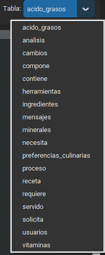
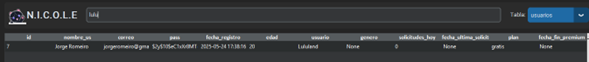
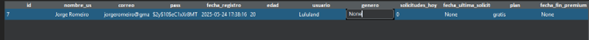
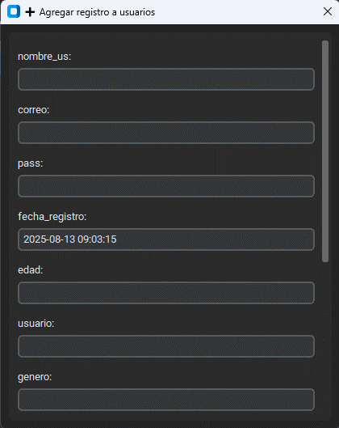
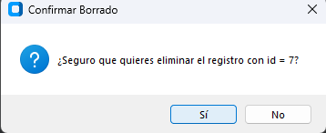

1. Elegir grupo de datos
Selecciona qué conjunto de información deseas ver desde una lista.

2. Buscar datos
Usa el cuadro de búsqueda para encontrar lo que necesitas.

3. Cambiar información
Haz doble clic sobre el dato que deseas editar.

4. Agregar información
Haz clic en Añadir para abrir una pantalla donde puedes escribir nuevos datos.

5. Eliminar información
Selecciona un dato y haz clic en Borrar. Se te pedirá confirmar antes de eliminar.
